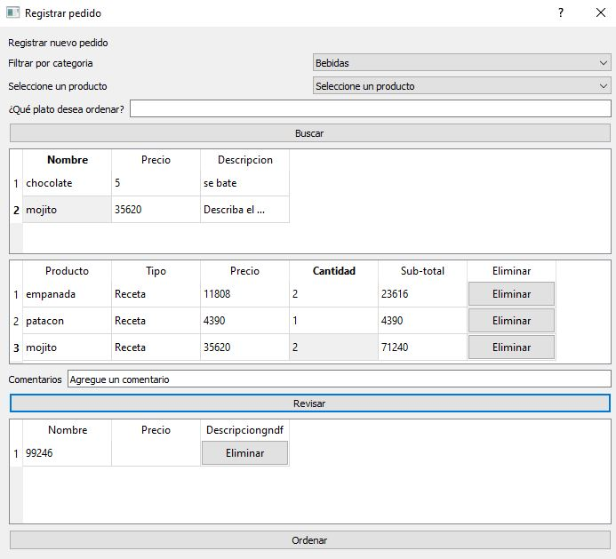
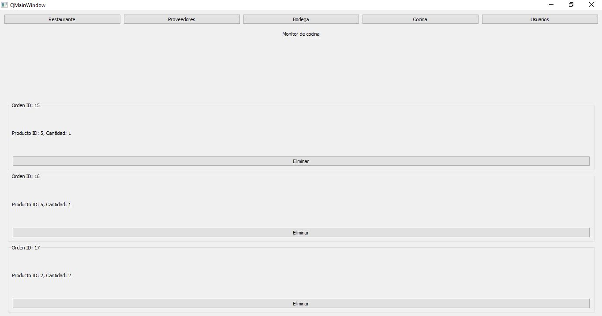
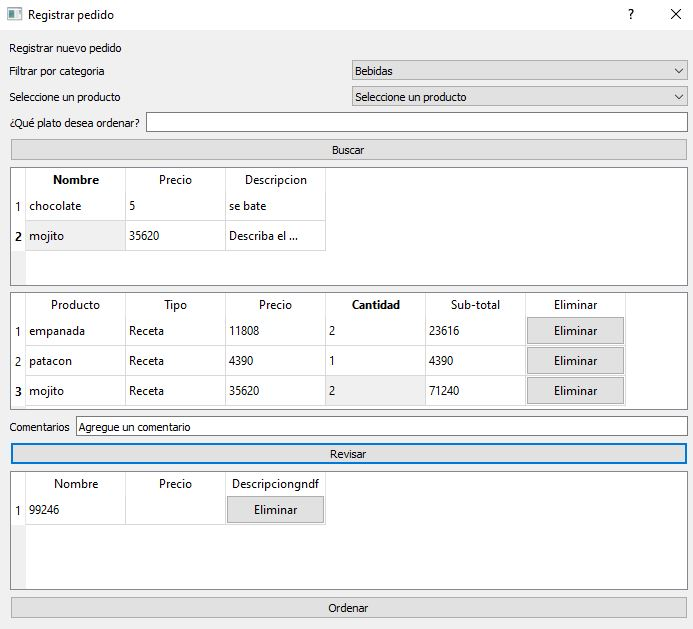
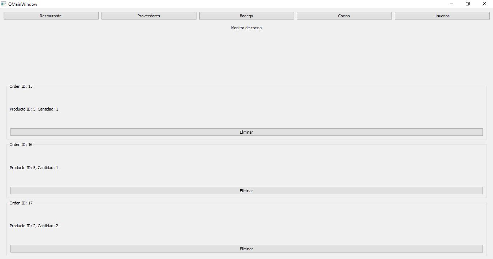

About
Jonathan, desarrollador fullstack junior en Antioquia, Colombia. Soy un desarrollador fullstack junior con sede en Antioquia, Colombia. Soy un apasionado del desarrollo web y estoy motivado para aprender y crecer en esta industria. No tengo experiencia laboral formal, pero he desarrollado dos proyectos personales que demuestran mis habilidades y conocimientos. Mi primer proyecto fue una aplicación web para una carnicería. La aplicación usa Python, Django y SQL para gestionar el inventario, los pedidos a proveedores y las ventas. Mi segundo proyecto fue una aplicación de escritorio para un restaurante. La aplicación usa Python y PyQt para gestionar el inventario, los pedidos a proveedores, los artículos y las recetas. Estoy familiarizado con las siguientes tecnologías y lenguajes de programación: - HTML - CSS - JavaScript - Python - Django - POO - Bases de datos relacionales Estoy buscando mi primera experiencia laboral en una empresa que me permita desarrollar mis habilidades y crecer como profesional. Estoy motivado para aprender y trabajar en proyectos desafiantes. Lo que me apasiona del desarrollo web son los retos de lógica y la posibilidad de crear aplicaciones que facilitan la vida. Mi primer acercamiento a la programación fue en mi carrera de física. Soy una persona muy curiosa, a quien le gusta enfrentar retos donde tenga que pensar y abstraerse. Creo que mis habilidades, experiencia y pasión por el desarrollo web me convierten en un activo valioso para cualquier equipo.

 


